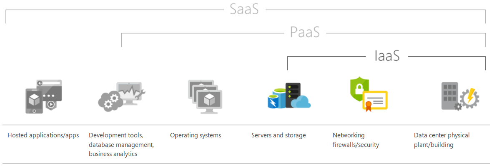

Catalyst
Summer of Tech Masterclass
Presented by Donovan Jones
This course
- Makes use of the Catalyst Cloud Documentation
- A mix of web dashboard, command line and theory
- Assumes no prior cloud knowledge
- Will get people using the command command line
- Assumes we are using Ubuntu (trusty)
Aims
- Understand what the "cloud" is
- Understand the basic features of the Catalyst Cloud so you can create your own website
- Gain familiarity with the Catalyst Cloud Documentation
- Gain familiarity with software automation using Ansible
What is the Cloud Computing?
The NIST Definition of Cloud Computing lists five essential characteristics of Cloud Computing:
- On-demand self-service
- Broad network access
- Resource pooling
- Rapid elasticity
- Measured service
On-demand self-service
A consumer can unilaterally provision computing capabilities, such as server time and network storage, as needed automatically without requiring human interaction with each service provider.
Broad network access
Capabilities are available over the network and accessed through standard mechanisms that promote use by heterogeneous thin or thick client platforms (e.g., mobile phones, tablets, laptops, and workstations).
Resource pooling
The provider's computing resources are pooled to serve multiple consumers using a multi-tenant model, with different physical and virtual resources dynamically assigned and reassigned according to consumer demand. There is a sense of location independence in that the customer generally has no control or knowledge over the exact location of the provided resources but may be able to specify location at a higher level of abstraction (e.g., country, state, or datacenter). Examples of resources include storage, processing, memory, and network bandwidth.
Rapid elasticity
Capabilities can be elastically provisioned and released, in some cases automatically, to scale rapidly outward and inward commensurate with demand. To the consumer, the capabilities available for provisioning often appear to be unlimited and can be appropriated in any quantity at any time.
Measured service
Cloud systems automatically control and optimize resource use by leveraging a metering capability at some level of abstraction appropriate to the type of service (e.g., storage, processing, bandwidth, and active user accounts). Typically this is done on a pay-per-use or charge-per-use basis. Resource usage can be monitored, controlled, and reported, providing transparency for both the provider and consumer of the utilized service.
What is the cloud?

What is the cloud?
- IaaS
- CaaS
- PaaS
- SaaS
What is the cloud?
IaaS
Infrastructure as a Service (IaaS) is a form of cloud computing that provides virtualized computing resources over the Internet. IaaS is one of three main categories of cloud computing services, alongside Software as a Service (SaaS) and Platform as a Service (PaaS).
IaaS
- AWS EC2
- Azure Virtual Machines
- Google Compute Engine
- Rackspace
- OpenStack
CaaS
Containers as a service (CaaS) is a form of container-based virtualization in which container engines, orchestration and the underlying compute resources are delivered to users as a service from a cloud provider.
CaaS
- Google Container Engine (Kubernetes)
- Amazon EC2 Container Service
- Azure Container Service
- OpenStack Magnum (Kubernetes, Docker Swarm, Mesos)
- Built on top of a Container Orchestration Engine
PaaS
Platform as a service (PaaS) is a cloud computing model that delivers applications over the Internet. In a PaaS model, a cloud provider delivers hardware and software tools -- usually those needed for application development -- to its users as a service. A PaaS provider hosts the hardware and software on its own infrastructure. As a result, PaaS frees users from having to install in-house hardware and software to develop or run a new application.
PaaS
- Heroku
- AWS Elastic Beanstalk
- Google App Engine
- Azure App Service
- OpenShift
- CloudFoundary
- Often built on top of a Container Orchestration Engine
SaaS
Software as a service (SaaS) is a software distribution model in which a third-party provider hosts applications and makes them available to customers over the Internet. SaaS is one of three main categories of cloud computing, alongside infrastructure as a service (IaaS) and platform as a service (PaaS).
SaaS
- Office 365
- Google Apps
- Xero
- Dropbox
- Slack
- Often built on top IaaS or CaaS
Cloud Platforms
The big three provide services across IaaS/CaaS/PaaS on their Cloud Platforms. SaaS services are not generally made available as part of the cloud platform.
OpenStack Overview
- What is OpenStack?
- OpenStack services
What is OpenStack?
- A "cloud operating system"
- Sits above your infrastructure providing IaaS
- Provides an API to interact with that infrastructure
- API provides operations like Create/Delete/Update for various components
- Command line tools, libraries, dashboard all interact with services via the API
What is OpenStack?

OpenStack services
- Dashboard (Horizon)
- Compute (Nova)
- Networking (Neutron)
- Object Storage (Swift)
- Block Storage (Cinder)
- Identity Service (Keystone)
- Image Service (Glance)
- Telemetry Service (Ceilometer)
- Orchestration Service (Heat)
Dashboard (Horizon)
Provides a web-based self-service portal to interact with underlying OpenStack services, such as launching an instance, assigning IP addresses and configuring access controls.
Compute (Nova)
Manages the lifecycle of compute instances in an OpenStack environment. Responsibilities include spawning, scheduling and decomissioning of machines on demand.
Networking (Neutron)
Enables network connectivity as a service for other OpenStack services, such as OpenStack Compute. Provides an API for users to define networks and the attachments into them. Has a pluggable architecture that supports many popular networking vendors and technologies.
Object Storage (Swift)
Stores and retrieves arbitrary unstructured data objects via a RESTful, HTTP based API. It is highly fault tolerant with its data replication and scale out architecture. Its implementation is not unlike a file server with mountable directories.
Block Storage (Cinder)
Provides persistent block storage to running instances. Its pluggable driver architecture facilitates the creation and management of block storage devices.
Identity Service (Keystone)
Provides an authentication and authorization service for other OpenStack services. Provides a catalog of endpoints for all OpenStack services.
Image Service (Glance)
Stores and retrieves virtual machine disk images. OpenStack Compute makes use of this during instance provisioning.
Telemetry Service (Ceilometer)
Monitors and meters the OpenStack cloud for billing, benchmarking, scalability, and statistical purposes.
Orchestration Service (Heat)
Orchestrates multiple composite cloud applications by using either the native HOT template format or the AWS CloudFormation template format, through both an OpenStack-native REST API and a CloudFormation-compatible Query API.
Openstack Architecture

OpenStack Workloads
- Big Data / Science / HPC
- Public Cloud
- Private Cloud
- Telco SDN / NFV
Running your own website
We are going to create a website on the internet
Website creation steps
- Create a server using the cloud dashboard (including Security Groups, SSH Keys and Floating IPs)
- Ensure that you can connect to the server using SSH
- Create a static website on your local machine using Hugo
- Configure DNS for the site
- Upload the website to the server
- Configure a webserver (nginx) to serve up the static site on the internet
Launching your first instance - Overview
Training room settings
- Prefix SSH key, security group and instance resource names with "yourname-"
- eg: yourname-first-instance, yourname-first-instance-key
Training room settings
ROUTER_NAME="border-router"
PRIVATE_NETWORK_NAME="private-net"
PRIVATE_SUBNET_NAME="private-subnet"
SSH_KEY_NAME="yourname-first-instance-key"
INSTANCE_NAME="yourname-first-instance"
SECURITY_GROUP_NAME="yourname-first-instance-sg"
FLAVOR_NAME="c1.c1r1"
IMAGE_NAME="ubuntu-16.04-x86_64"
Create an SSH keypair
$ ssh-keygen -t rsa
Generating public/private rsa key pair.
Enter file in which to save the key (/home/train/.ssh/id_rsa):
Enter passphrase (empty for no passphrase):
Enter same passphrase again:
Your identification has been saved in /home/train/.ssh/id_rsa.
Your public key has been saved in /home/train/.ssh/id_rsa.pub.
The key fingerprint is:
SHA256:1K16QYwSmm2IAyHQBVXj19NW91v1SRbjtKzun6IsEjE train@train01
The key's randomart image is:
+---[RSA 2048]----+
|*o.+o.+ .*+|
|.... * o = o .*.B|
| o + = + * + =+|
| . . E . + . o|
| S o . . |
| . . .. |
| o . . |
| . o. .. .|
| . .o..oo |
+----[SHA256]-----+
Upload an SSH keypair
http://docs.catalystcloud.io/first-instance/dashboard.html#uploading-an-ssh-key
$ sudo apt-get install xclip
$ cat ~/.ssh/id_rsa.pub | xclip
Create security groups
http://docs.catalystcloud.io/first-instance/dashboard.html#configure-instance-security-group
Add a second rule for port 80 equivalent to the rule you have added for port 22
Create a server
Connect to server
If you cannot ssh to your instance have a look at this FAQ
Create a static website
- Follow the instructions at https://gohugo.io/overview/quickstart/ to create a static website
- Call your site something unique rather than bookshelf
- Choose a theme to use
- Step 7: baseurl = "http://train01.gamma.net.nz/"
- Skip Steps 8, 10 and 12
Commands 1
$ wget https://github.com/gohugoio/hugo/releases/download/v0.25.1/hugo_0.25.1_Linux-64bit.deb
$ sudo dpkg -i hugo_0.25.1_Linux-64bit.deb
$ hugo new site foobar
$ cd foobar/
$ hugo new post/first-post.md
$ echo "This is my first post!" >> content/post/first-post.md
$ cd themes/
$ git clone https://github.com/dim0627/hugo_theme_robust.git
$ cd ..
$ hugo server --theme=hugo_theme_robust --buildDrafts
Commands 2
$ vi config.toml
$ cat config.toml
baseurl = "http://train01.gamma.net.nz/"
languageCode = "en-nz"
title = "SoT Masterclass!"
[Params]
Author = "Your Name"
$ hugo undraft content/post/first-post.md
$ hugo --theme=hugo_theme_robust
$ # static html is now stored in public folder
Configure DNS
Check DNS and ensure your domain name is pointing at the floating IP address of your instance
$ host train01.gamma.net.nz
Upload the website
Copy the public directory to the webserver
$ cd foobar/
$ scp -r public/ ubuntu@103.254.156.118:
Configure the webserver
$ ssh ubuntu@150.242.42.156
$ sudo apt-get install nginx
$ cd public
$ sudo mv * /var/www/html
$ sudo chown -R root:root /var/www/html
Visit your site
Architecting for the cloud
- Cattle vs pets
- Immutable infrastructure
- MTTR vs. MTBF
Immutable Architecture/Infrastructure
- The environment is defined in code
- If you need to change _anything_ you create a new instance and destroy the old one
Immutable Architecture

MTTR vs. MTBF

Automation
- Orchestration
- Configuration Management
- Application Deployment
- Provisioning
- Security & Compliance
Orchestration
Configuration Management
Automated Application Deployment
Ansible in 5 minutes
- General purpose Automation tool
- Agentless
- Python and SSH
- Push not poll
The basics
- SSH to a host or list of hosts (group) and execute commands
- Inventories: a list of hosts
- /etc/ansible/hosts
- ansible vs. ansible-playbook
- ad hoc commands (cssh style)
- commands in a playbook
Playbooks
- YAML
- Plays
- Hosts
- Roles
- Tasks
- Handlers
Playbook primatives
- Variables
- Templates (jinja2)
- Conditionals
- Loops
- Blocks
Modules
- Blob of python
- Map to tasks
- SCP to temporary directory on target host
- Execute python on target host
- Returns JSON
- Code removed
- Local Ansible evaluates returned JSON
Idempotence
- Make the same request repeatedly to produce the same result
- ok = I checked and the thing you wanted was already done so I skipped doing it
- changed = I checked and the thing you wanted was not done so I did it
- Handlers - multiple notifies will only trigger one reload at end of play
PLAY RECAP *********************************************************************
localhost : ok=2 changed=4 unreachable=0 failed=0
...
PLAY RECAP *********************************************************************
localhost : ok=6 changed=0 unreachable=0 failed=0
Localhost?
- Cloud modules are localhost tasks
- Tasks map to modules
- Modules make API calls in the background
- OpenStack modules use shade
Cloud Modules
Cloud Modules
- Amazon (64)
- Azure (2)
- Centurylink (13)
- Cloudstack (32)
- Digital Ocean (3)
- Docker (3)
- Google (7)
- Linode (1)
Cloud Modules
- Lxc (1)
- Misc (6)
- Openstack (50)
- Profitbricks (5)
- Rackspace (29)
- Softlayer (1)
- Vmware (26)
- Webfaction (8)
Delete resources using the dashboard
- SSH Keypair
- Secuity Group
- Instance
Tools clients and credentials
- http://docs.catalystcloud.io/getting-started/cli.html#source-an-openstack-rc-file
- Source an OpenStack RC file
$ source ~/Downloads/os-training.catalyst.net.nz-openrc.sh
$ env | grep OS_
Repeat webserver build using Ansible
- http://docs.catalystcloud.io/first-instance/ansible.html
- Clone catalystcloud-ansible repo
- Install Ansible
- Edit example-playbooks/sot-masterclass playbook
Exercises
- Redo something you have not fully completed
- Try and write a playbook that terminates you instance, security group and keypair
- Have a go at one of the example playbooks in the Ansible Repo
- Have a go at setting up your first instance using the command line
- Have a go at setting up your first instance using heat
- Have a go at setting up your first instance using terraform (see upcoming slide)
First Instance using Terraform
$ mkdir terraform && cd terraform
$ wget https://raw.githubusercontent.com/catalyst/catalystcloud-orchestration/master/terraform/first-instance/first-instance.tf
$ wget https://releases.hashicorp.com/terraform/0.6.16/terraform_0.6.16_linux_amd64.zip
$ unzip terraform_0.6.16_linux_amd64.zip
$ vi first-instance.tf
$ ./terraform plan
$ ./terraform apply
$ ./terraform destroy
Wrapping up
What does this mean for you guys embarking on a career in IT?
Software is eating the world
Software is eating the world. This includes the "old" IT world and hardware.
What does this mean for you?
Automate things!
Learn automation tools and practices because they are at the heart of todays IT
The types of automation you will be using will be largely dependent on the type of organisation you are working for
You will need to be following software development workflows even if you are a sysdamin or network engineer
What does this mean for NZ?
No infrastructure in NZ and all our computing is done on AWS, Azure or Google Cloud Platform in Sydney?
Reasons why there will still be infrastructure in NZ
- Inertia
- Local computation for local infrastructure
- Computation closer to the edge
- Latency
- Sovereignty
- Monopoly avoidance
Greenfields vs. Legacy
Greenfields projects vs. supporting legacy systems
What about containers?
Container are the future but the future is not evenly distributed. We will be dealing with non containerised workloads for many years yet.
What about Windows?
- Traditional Windows Server administration is enforced Snowflake (point and click)
- Modern Windows Server administration looks more and more like Linux
- Windows Server Core
- WSL (Ubuntu bash on Windows 10)
- Powershell (used by Ansible for Windows)
- Docker on Windows
- Ansible for Windows
- SSHD on Windows
- SQL Server ported to Linux
What about Networking?
- SDN
- NFV
- Ansible network modules
Technologies to watch
- OpenStack
- Ansible
- Kubernetes and the other COEs for running Docker